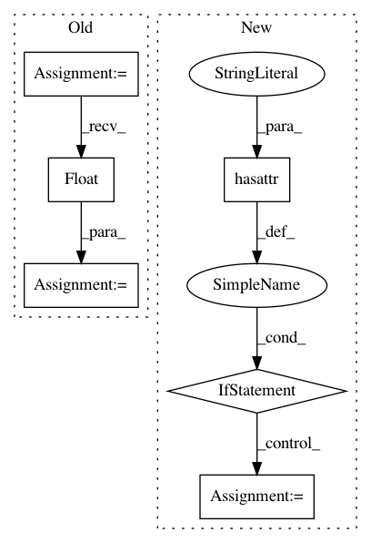

aab3902d4a7d55f5a86058854adc36b8a12c873f,catalyst/dl/callbacks/base.py,OptimizerCallback,on_batch_end,#OptimizerCallback#Any#,202
Before Change
optimizer = state.get_key(
key="optimizer", inner_key=self.optimizer_key
)
loss = state.get_key(key="loss", inner_key=self.optimizer_key)
scaled_loss = self.fp16_grad_scale * loss.float()
scaled_loss.backward()
master_params = list(optimizer.param_groups[0]["params"])
model_params = list(
After Change
// change in future.
// But alternative solution is to have AmpOptimizerCallback.
// or expose another c"tor argument.
if hasattr(optimizer, "_amp_stash"):
from apex import amp
with amp.scale_loss(loss, optimizer) as scaled_loss:
scaled_loss.backward()
else:
loss.backward()
if (self._accumulation_counter + 1) % self.accumulation_steps == 0:
self.grad_step(
optimizer=optimizer,
optimizer_wd=self._optimizer_wd,
In pattern: SUPERPATTERN
Frequency: 3
Non-data size: 6
Instances
Project Name: catalyst-team/catalyst
Commit Name: aab3902d4a7d55f5a86058854adc36b8a12c873f
Time: 2019-05-20
Author: ekhvedchenya@gmail.com
File Name: catalyst/dl/callbacks/base.py
Class Name: OptimizerCallback
Method Name: on_batch_end
Project Name: rusty1s/pytorch_geometric
Commit Name: cf1cc19bb79ae4128ef5437279de475835374a46
Time: 2019-03-19
Author: matthias.fey@tu-dortmund.de
File Name: benchmark/runtime/dgl/train.py
Class Name:
Method Name: train_runtime